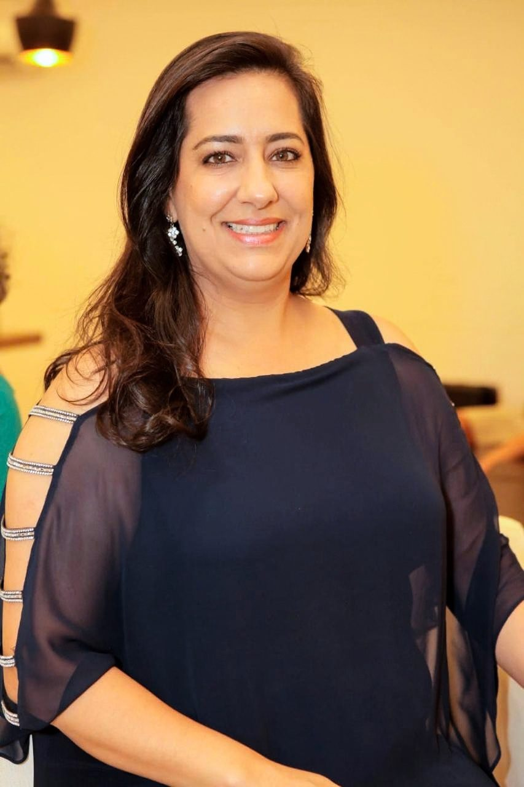
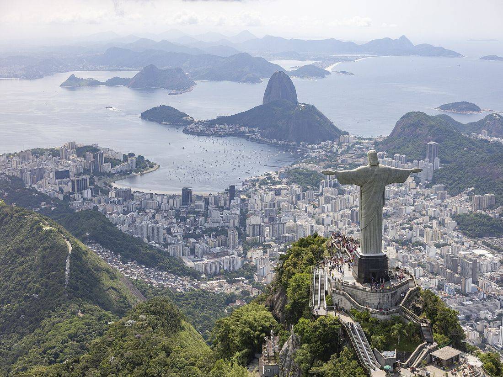
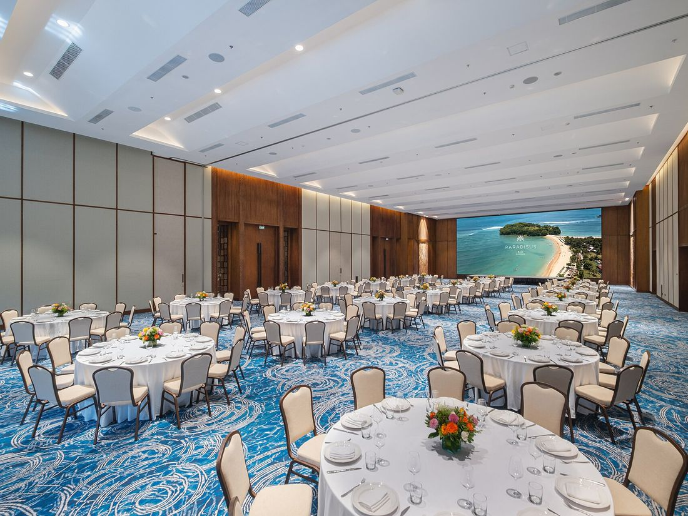
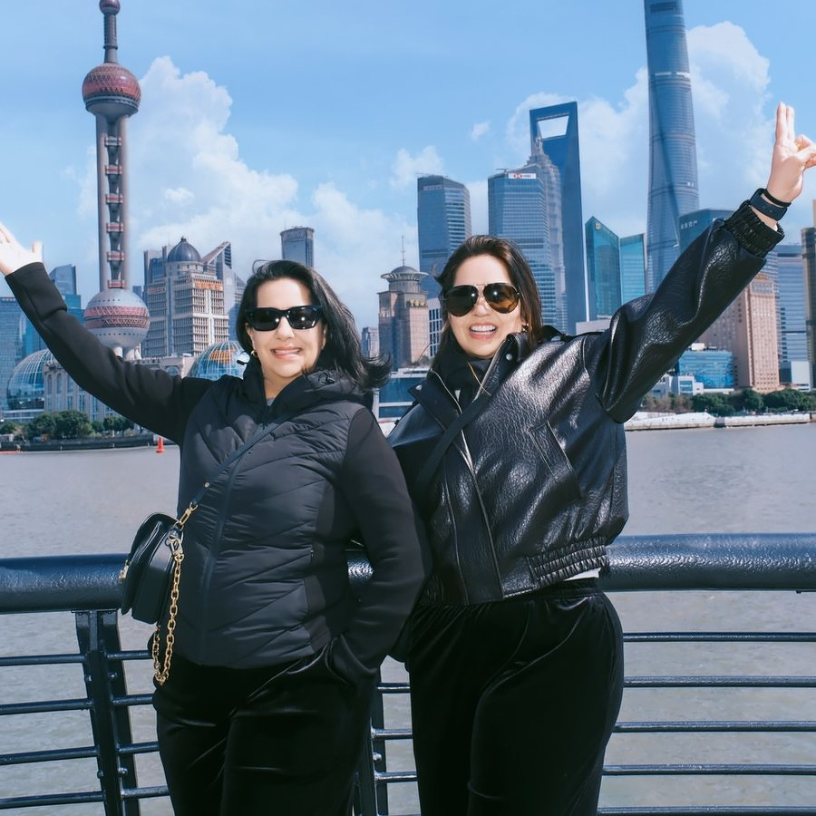
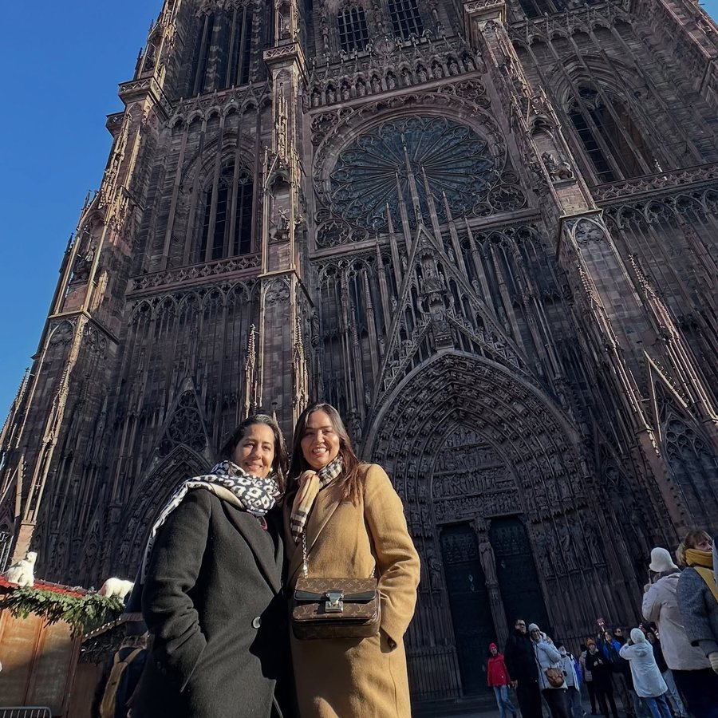
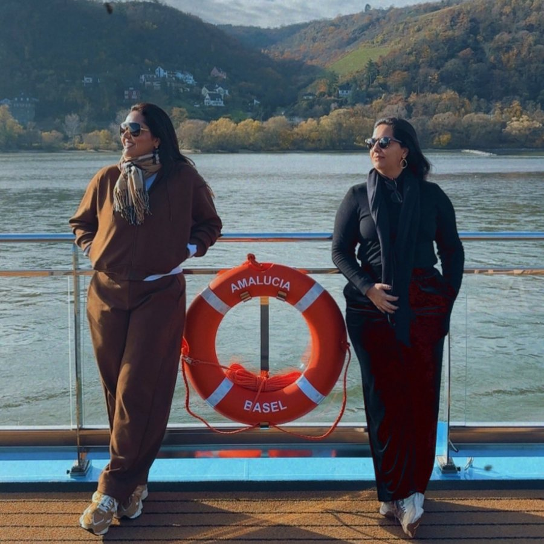

Turismo corporativo e personalizado
Talita Pereira
São 26 anos no turismo. Em 2000, abri a Viagem Turismo, que hoje tem sede própria.
Conheça a história
Uma história que começouaos 18 anos
Aos 18 anos, terminei um curso de emissão de passagens entre as três melhores da turma.
Ganhei um estágio numa agência de viagens. Foi amor à primeira vista.
Sem internet, cada passagem era emitida por telefone e preenchida à mão.
Aos 18 anos, fiz um curso de emissão de passagens e me encantei pelo universo das agências de viagens. Terminei entre as três melhores alunas da turma e ganhei um estágio numa agência. Foi amor à primeira vista.
Não havia internet nem bilhete eletrônico. Cada passagem era emitida por telefone, direto com a companhia aérea, e preenchida à mão.
Depois de dois anos ali, nasceu o desejo de ter a minha própria empresa.
Nasce aViagem Turismo
Dois anos depois, mesmo muito jovem, decidi ter a minha própria empresa.
Em 2000, abri a Viagem Turismo, ao lado dos meus irmãos e com o apoio da minha família.
Eu era muito jovem e tinha os medos de qualquer pessoa da minha idade. Decidi seguir em frente mesmo assim.
Em 2000, abri a Viagem Turismo, ao lado dos meus irmãos, num mercado que exigia conhecimento, relacionamento e credibilidade. Tive o apoio da minha família, especialmente do meu pai e da minha tia.

2000 · o primeiro grande grupo
A Associação Goiana de Supermercados escolheu a minha agência, entre várias, para levar cerca de 100 empresários a uma feira no Rio de Janeiro.
Cerca de 100 empresários do setor supermercadista de Goiás iam a uma grande feira do segmento no Rio de Janeiro. A Associação Goiana de Supermercados selecionou várias agências para cuidar da viagem, e escolheu a minha.
Assim que abri, surgiu meu primeiro grande desafio: acompanhar esses empresários nessa viagem.
Acompanhei o grupo durante toda a viagem e cuidei de toda a operação. O resultado foi um grande sucesso.

Referência em grupos, eventos eexperiências corporativas
Depois vieram grandes empresas e associações, como a ABAD, que atendi por muitos anos.
Depois desse grupo, vieram grandes empresas e associações, como a ABAD, que atendi por muitos anos nas feiras e eventos do setor atacadista.
- Viagens de luxo
- Viagens corporativas
- Grupos de incentivo e viagens de premiação
- Eventos e feiras
- Programas de bonificação e experiências personalizadas
Sempre perto do cliente, com atenção a cada detalhe da operação.
Conhecer pararecomendar
Em 26 anos no turismo, visitei pessoalmente destinos e resorts de perfis muito diferentes.
“Mais do que vender uma viagem, eu oriento a partir do que vivi.”
Talita PereiraBrasil · Argentina e Uruguai · República Dominicana e Cancún · Orlando e Miami · Grécia, Turquia, Itália, França, Suíça, Alemanha, Holanda e Espanha · Japão, China e Coreia
- BrasilOs principais destinos e resorts
- América do SulArgentina e Uruguai
- Caribe e MéxicoRepública Dominicana e Cancún
- Estados UnidosOrlando e Miami
- ÁsiaJapão, China e Coreia
- EuropaGrécia, Turquia, Itália, França, Suíça, Alemanha, Holanda e Espanha


